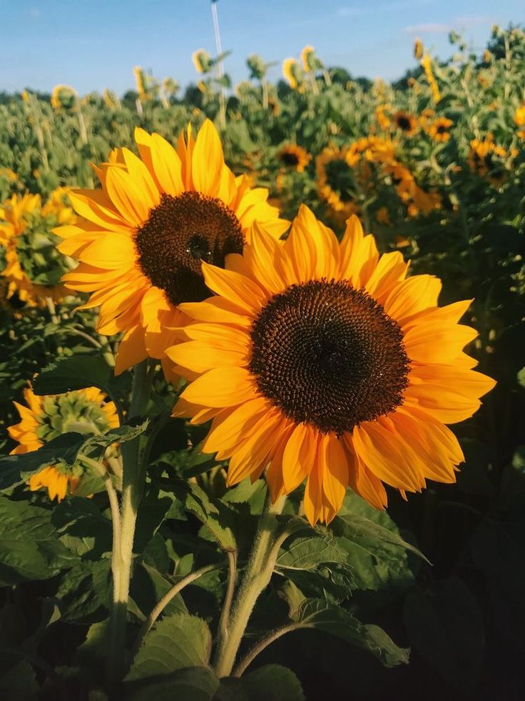

Sunflower Cultivation Guide

1. Land Preparation
Plow the land 2–3 times and level it well.
Ensure well-drained loamy soil for optimal growth.
Incorporate 5 tons of FYM per acre before final plowing.
2. Seed Selection & Sowing
Choose hybrid varieties for better yield and oil content.
Seed rate: 2–3 kg per acre.
Sow with 60 cm row and 20–30 cm plant spacing (May–July or Jan–Feb).
Treat seeds with fungicide and Trichoderma before sowing.
3. Water Management
Sunflower is drought-tolerant but benefits from 3–4 irrigations.
Critical stages: flowering and grain filling.
Avoid water stagnation during early stages.
4. Fertilization Schedule
Basal dose: Urea (20 kg), DAP (40–50 kg), MOP (10–15 kg).
Apply zinc sulfate if soil is deficient.
Top dressing of urea (10–15 kg) after 25 days of sowing.
5. Weed & Pest Management
Weed control: 1 hand weeding 20 days after sowing or use pre-emergent herbicide.
Pests: Helicoverpa and capitulum borer — use safe insecticides.
Diseases: Rust, leaf blight — control with fungicides if needed.
6. Investment Breakdown (Per Acre)
Input
Estimated Cost (INR)
Seeds
₹1,000 – ₹1,500
Fertilizers
₹1,200 – ₹1,800
Pesticides/Fungicides
₹800 – ₹1,200
Labor
₹4,000 – ₹6,000
Irrigation
₹1,000 – ₹1,500
Total Investment
₹8,000 – ₹12,000 per acre
7. Harvesting & Yield
Harvest when back of heads turn yellow and seeds harden.
Expected yield: 6–8 quintals per acre.
8. Market Rate & Profit Estimation
Market price: ₹4,000 – ₹6,000 per quintal.
Gross returns: ₹24,000 – ₹48,000 per acre.
Net profit: ₹12,000 – ₹36,000 per acre.